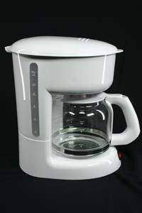
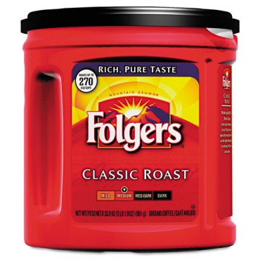
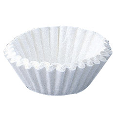
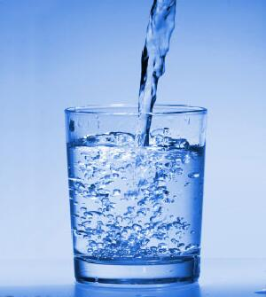

Coffee is a brewed beverage prepared from "Coffee Beans", which are the roasted seeds of the Coffea plant. Coffee Beans are typically cultivated in South America, Central Africa, and Southeast Asia.
Coffee comes in many varieties: from hot coffee to iced coffee, from decaf to espresso, from black coffee to lattes, there is a coffee drink for everyone.
If you have never prepared coffee before, it is easy to get started. You will need a few things first:
| Coffeemaker | Coffee Grounds | Coffee filter | Cold Water |
|---|---|---|---|
|  |  |  |  |
You can purchase coffee grounds and coffee filters at any supermarket. A coffeemaker can be purchased from most department stores.
Once you have these materials, you are ready to make your first cup of coffee!
Step 1:
Place the coffee filter in the coffee filter container on top of the coffeemaker. Note that some coffee makers come with permanent
filters, so you should consult your owner's manual.
Step 2:
Insert coffee grounds into the coffee filter. You should insert a tablespoon of coffee grounds for every cup (8 ounces) that you
plan to prepare.
Step 3:
Fill the coffeemaker pot with cold water equal to the amount of cups you plan to make. You can use the markings on the pot or the
cup you plan to drink from in order to measure the water.
Step 4:
Pour the water in the pot into the water container at the top of the coffeemaker. Make sure not to spill any!
Step 5:
Place the coffee pot on its stand and close the water container.
Step 6:
Press the start button on your coffee maker.
Once the coffee maker is done brewing the coffee, pour it into your coffee mug and enjoy!
Now that you know how to make a simple cup of coffee, perhaps you would like to search for a recipe.
A stimulant which can temporarily ward off drowsiness and raise alertness.
A brewed beverage which is prepared from the roasted seeds of the Coffea plant.
The seed of a coffee plant. Unprocessed coffee beans are roasted in the process of preparing coffee.
An appliance which is used to brew coffee. This machine allows for the preparation of coffee without having to boil water in a separate container. Also known as a "Coffee Machine".
A utensil used in coffee brewing to remove organic components. Filters are most often made with disposable paper, but can also be made of stainless steel for brewing certain types of coffee drinks.